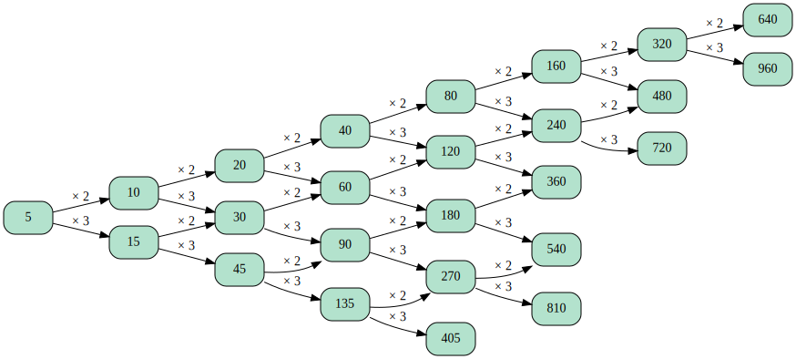

Geist Demo for SciPy 2024
Suppose we have a fish dataset stored in DuckDB, which contains a table named edges. The fish dataset was generated based on the following rules:
The initial start node is 1.
The edge can be either 2 or 3 or 5.
Start node times edge equals to the end node.
Below shows the first 5 rows of the fish table:
| startnode | edge | endnode |
|---|
| 1 | 3 | 3 |
| 1 | 2 | 2 |
| 1 | 5 | 5 |
| 5 | 3 | 15 |
| 2 | 3 | 6 |
1. Visualization of the Fish Graph
2. Visualization of the subgraph extracted from the Fish Graph
Find all nodes that can be reached from node 5 by following either edge 2 or 3.
